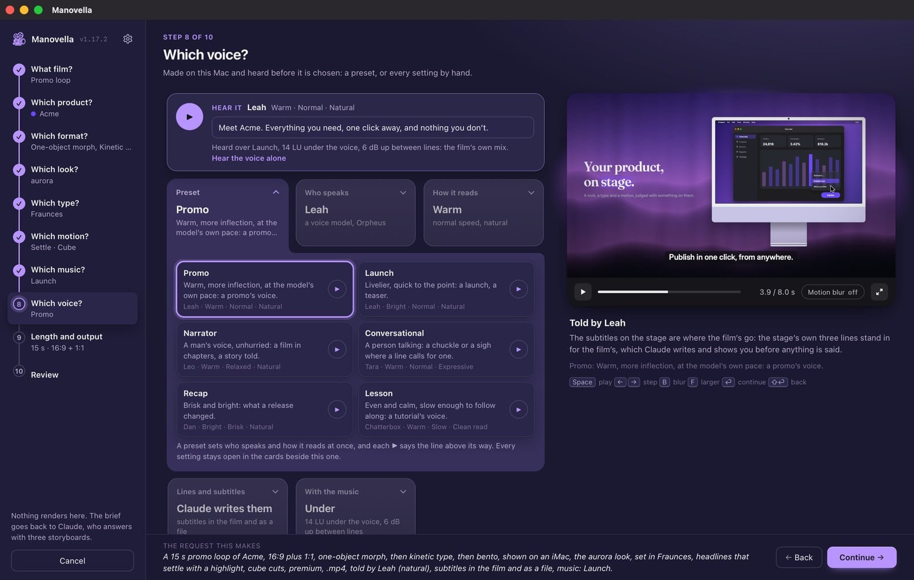

Guide
Sound
The music and its beat, a voice-over from a local model or a macOS voice, subtitles, and how a voice and a track are mixed into one soundtrack.
Music
The Studio’s music step, or the request, picks one of:
- A track from your music library (any audio file in it, with what its notes file says of it; see Settings).
- A file of yours, royalty-free or yours to publish: a film goes out with it. It is copied beside the film.
- A new track from Gemini. Claude cannot make music. The Studio writes a prompt from the film (its tone, its length, and a voice over it with no melody in the way of the words), you copy it into Gemini’s own app, and the track you get back is saved in the music library when there is one (in the product’s folder when the library keeps one per brand, with its paragraph in that folder’s notes file), else in the film’s
src/audio/. - A metronome (
AUDIO=click): a click on every beat of the film’s grid, never loudness-matched, to hear whether the cuts land before any music is chosen. - None. A silent film is played muted by a page or a feed anyway, and a film that speaks can still have no music.
A track goes under the film with AUDIO=track.mp3, from AUDIO_AT seconds into it, faded out over the last 0.6 s and brought to −14 LUFS (AUDIO_LUFS; AUDIO_NORM=0 keeps it as it is). Before the first frame the soundtrack is checked: a file without sound or an AUDIO_AT past its end stops the render, and a track shorter than the film or a silent stretch is said.
The beat
The cuts land on the music’s beat. beats.mjs measures a track from its samples alone (ffmpeg decodes; no model, no network): its tempo, whether it holds, every beat, the bars, the sections, and the bpm and AUDIO_AT that put the film on its beat.
node beats.mjs track.mp3 # tempo, bars, sections, and what the page needs
node beats.mjs track.mp3 --out beats.js # a track that drifts: its own beats, for the page
AUDIO=track.mp3 node render.mjs beats # the page's beats against the track'sA steady track gives the page a bpm and a start on a bar (AUDIO_AT); one that drifts (a live band, a rubato) fits no fixed grid, so the page follows its own beats (FILM.beats). With AUDIO=<track> the render measures the page’s beats against the track’s before it starts. A pulse too weak to find reports no beat rather than a grid made up. The Studio plays each track of the library with its length and tempo measured.
Voice-over
Any film can speak: a promo that says its claim, a tutorial that tells its task. The Studio’s voice step lets you hear a voice say a line before you choose it, at the tone, speed and human touch you set, through the same voice.mjs the film will use, and with a track chosen, mixed under it by the same mix.mjs (Hear the voice alone for the voice by itself). Its presets set a voice and its reading at once, each heard first: Promo (Leah, warm), Launch (Leah, bright), Narrator (Leo, relaxed), Conversational (Tara, expressive), Recap (Dan, bright and brisk) and Lesson (Chatterbox, slow, a clean read: the tutorial’s). Every setting stays open under them. The choices:

- A voice model, free, local and offline once downloaded: run by mlx-audio on an Apple Silicon Mac, and by PyTorch on Linux and Windows (below). Three were chosen by ear. Chatterbox Turbo (3 GB, one voice, even and calm: a lesson) and Orpheus (3.5 GB, eight voices, its voice “leah” unless another is named, warmer: a promo) were tried in US English and no other language. Kokoro (330 MB, about ten times smaller and quick: a draft) was heard in US English (Heart, Bella, Michael) and in Italian (Sara), and in no other language; it has no tone to set.
- A macOS voice, on a Mac, through
say. The ones every Mac has are compact or plainly synthetic; Premium and Enhanced ones are a free download in System Settings. They are for a language the voice models were not tried in (Italian has Kokoro’s Sara): a film in English is told by a model. The Studio lists a Mac’s voices best first and says under them what it lacks. - Your recordings, one file a line.
- None.
A model reads a line a little differently at every seed. A take is a seed: the same model, voice, words and seed gave the same WAV to the byte, twice in the same environment and again in a second one made from nothing (Kokoro’s differ by one 16-bit step from run to run, with the same length). The take someone heard is the seed written on the step. --audition 3 says three takes a step into voice-mlx/audition, to listen to.
The tone (calm, warm, bright) is how freely the model reads; tempo (0.85 to 1.15, pitch kept) and level are worked on the recording, so changing them says nothing again. The human option (clean, natural, expressive) varies each line’s pace within 3 % and lets a line make a sound where the model supports it.
Once per Mac
node voice.mjs --setup chatterbox orpheus kokoroThis makes a Python 3.13 environment in ~/.local/share/film-voice (600 MB; brew install python@3.13 first when there is none) with mlx-audio and everything under it at the versions of voice-constraints.txt, downloads the models named into ~/.cache/huggingface, says a fixed line with each and prints its SHA-256 beside the one recorded in voice.mjs (none for Kokoro). Asking for kokoro also installs its text packages, pinned in voice-constraints-kokoro.txt (spaCy, misaki and the espeak-ng library: about 160 MB, wheels only, nothing from Homebrew). Its voice tells Italian from English by its first letter (if_sara, af_heart), or by lang in the story’s mlx. The same means a seed is the same recording on two Macs; not the same means it is not, and a film approved on one needs its voice-mlx folder brought over or its takes heard again. Without the environment voice.mjs stops and names the command; it never falls back to another voice. VOICE_PYTHON=<python> uses another Python.
On Linux and Windows
node voice.mjs --setup kokoro
node voice.mjs --setup chatterbox orpheusThe same models run on PyTorch, from a Python 3.12. A recent distribution’s own Python is newer: uv python install 3.12, then VOICE_SETUP_PYTHON="$(uv python find 3.12)" (in PowerShell, $env:VOICE_SETUP_PYTHON = (uv python find 3.12); on Windows the launcher’s py -3.12 is found by itself). kokoro makes venv-torch in ~/.local/share/film-voice, with PyTorch for the CPU and Kokoro (about 1.3 GB). chatterbox orpheus makes venv-large, with PyTorch for CUDA where nvidia-smi answers, else for the CPU, where a line takes tens of seconds (Chatterbox) to minutes (Orpheus). Their weights are about 4 and 6.6 GB, and Orpheus needs about 7 GB of the GPU’s memory, or 13 GB of RAM on a CPU. A GPU newer than their PyTorch build (an RTX 50) is left for the CPU, saying so; VOICE_DEVICE=cpu or cuda decides. A take said there is the same voice and words as on a Mac, through another engine, not the same file: a film approved on a Mac keeps its voice-mlx folder, or has its takes heard again.
Subtitles
A film that speaks can carry subtitles: captions.srt and captions.vtt are written beside the voice, and the page draws the subtitle of the moment (FILM.captions). In the brief, captions is both (burned in and as files), burned, file or none. A pause written as [[slnc 280]] in a sentence, and a model’s sounds such as [chuckle], are left out of the subtitles.
Music under a voice
A voice and a music track become one soundtrack with mix.mjs: both measured (EBU R128), the music sitting --under LU below the voice while it speaks (14 by default, 12 to 15 being a voice-over’s; the Studio offers Present at 10, Under at 14 and Far under at 18) and coming up --lift dB between lines (6 by default; 0 keeps it under all along). It goes down 0.35 s before a line begins, and a pause shorter than 0.7 s is not a gap. It prints what came out, measured on the result.
node mix.mjs --voice narration.wav --music track.mp3 --out mix.wav [--under 14] [--lift 6]
AUDIO=mix.wav AUDIO_AT=0 AUDIO_LUFS=-16 node render.mjs video film.mp4